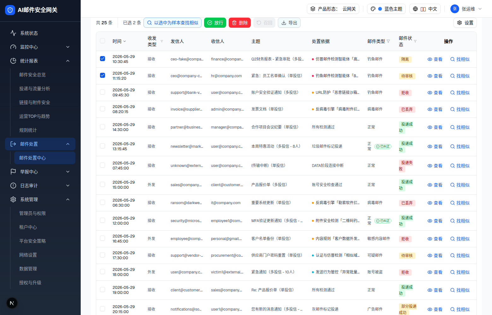

| 属性 | 值 |
|---|---|
| 所属组件 | 2.2 日志表格 InvestigationLogsTable |
| 主文件 | email-handling-disposal-center/index.html |
| 触发路径 | 表格 → 勾选任意行（此处勾选行1隔离中+行2待审核）→ 出现「已选 N 条」+ 批量按钮按状态门控启用 |
| 范围说明 | 「规则命中统计」不在本规格范围（见主文件说明块） |
下方内嵌为批量条（表格头部条带）真实 HTML。

| 按钮 | 启用条件 / 备注 |
|---|---|
| 以选中为样本查找相似 | 1–10 封；>10 禁用 + Tooltip「最多 10 封样本」 |
| 放行 | 选中含 隔离中/检测中/待审核（无数量上限）→ L7 |
| 删除 | 选中含可删状态（无数量上限）→ L9 |
| 召回 | 1–10 封 且 含 投递成功/部分投递成功 → L8；>10 禁用 + Tooltip「最多 10 封召回」 |
| 导出 | ≥1 封；无 handler |
| 设置 | 常驻右侧；无 handler |
| 已选计数 | 「已选 N 条」仅勾选时显示；全选仅当前页，批量作用于跨页选择集 |
| 比对项 | demo 实际 DOM | 嵌入的 HTML | 一致 |
|---|---|---|---|
| 批量条文案 | 共 25 条 / 已选 2 条 / 5 按钮 / 设置 | 一致 | ✅ |
| 放行按钮 | 启用（含隔离中/待审核） | 一致 | ✅ |
| 召回按钮 | 禁用（选中无已投递） | 一致 | ✅ |